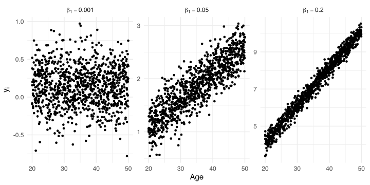
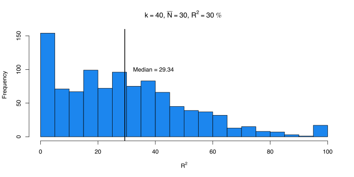

In the EE model \(\beta_0\) is \(\theta\) and \(\epsilon_i \sim \mathcal{N}(0, \sigma^2_i)\)
\[
y_i = \beta_0 + \epsilon_i
\]
In the RE model \(\beta_0\) is \(\mu_{\theta}\) and \(\beta_{0_i}\) are the \(\delta_i\).
Explaining \(\tau^2\)
So far we simply assumed \(\tau^2 = 0\) (for the EE model) or estimated it using the RE model.
We can extend the intercept-only meta-analysis by including study-level predictors (as in standard linear regression) to explain the estimated true heterogeneity.
Explaining \(\tau^2\)
Let’s make an example where we simulate a meta-analysis with \(k = 100\) studies. Beyond the effect size, we extracted an experimental condition where 50 studies where lab-based experiments \(x_{lab}\) and 50 studies where online experiments.
We assume that there could be a lab effect thus we included a predictor in the model.
Explaining \(\tau^2\)
Now the model have a predictor \(x\) (the type of experiment) and two parameters \(\beta_0\) and \(\beta_1\). Depending on the contrast coding (default to contr.treatment() in R) the \(\beta_0\) is different. Coding exp as 0 for lab-based experiments and 1 for online experiments:
What is missing is the random-effect. Basically we still have \(\tau^2\) determining the \(\delta_i \sim \mathcal{N}(0, \tau^2)\) but now is the residual \(\tau^2_r\). The heterogeneity after including the predictor.
Clearly the difference between \(\tau^2\) (the total heterogeneity) and \(\tau^2_r\) (residual heterogeneity) is an index of the impact of \(X\).
Simulating the \(X\) effect
To simulate a meta-regression we just need to choose the parameters values (\(\beta_0\) and \(\beta_1\)) and implement Equation 1. Using treatment coding, \(\beta_0\) is the effect size when \(X = 0\) (i.e., lab-based experiments) and \(\beta_1\) is the difference between lab and online experiments.
Now we can use the sim_studies() function as usual. The difference is that es is no longer a single value but a vector (with different values according to the \(X\) level) and tau2 is \(\tau^2_r\) (this the leftover heterogeneity after including the \(X\) effect)
To fit a meta-regression we still use the metafor::rma() function, adding the mods = ~ parameter with the model formula (same as the right-hand side of a y ~ x call in lm). The name of the predictor in the formula need to match a column of the data = dataframe.
The output is similar to the RE model with few additions:
Everything related to the heterogeneity (\(H^2\), \(I^2\), \(Q\), etc.) is now about residual heterogeneity
There is the (pseudo) \(R^2\)
There is an overall test for the moderators \(Q_M\)
There is a section (similar to standard regression models) with the estimated parameters, standard error and Wald test
Model parameters
intrcpt and exponline are the estimates of \(\beta_0\) and \(\beta_1\). The interpretation depends on the scale of the effect size and the contrast coding.
The Test of Moderators section report the so-called omnibus test for model coeffiecients. Is a simultaneous test for 1 or more coefficients where \(H_0: \beta_j = 0\).
In this case, coefficient 2 means that we are testing only the 2nd coefficient \(\beta_1\). By default, the intercept is ignored. In fact, the exponline line and the omnibus test are the same (the \(\chi^2\) is just the \(z^2\))
We can also test any combination of parameters. For example we could test if lab-based experiments and online experiments are both different from 0. This is the same as fitting a model without the intercept1 thus estimating the cell means (see Schad et al. 2020).
# now we are testing two coefficientsfit_no_int<-rma(yi, vi, mods =~0+exp, data =dat)
A more elegant way is by using the GLHT framework. Basically we provide a contrast matrix expressing linear combinations of model parameters to be tested. In our case \(\text{lab} = \beta_0 = 0\) and \(\text{online} = \beta_0 + \beta_1 = 0\).
Practically, the matrix formulation is the following:
C<-rbind(c(1, 0), c(1, 1))B<-coef(fit)C%*%B# same as coef(fit)[1] and coef(fit)[1] + coef(fit)[2]#> [,1]#> [1,] 0.3974823#> [2,] 0.7236168
General Linear Hypotheses Testing (GLHT)
We can use the anova() function providing the model and the hypothesis matrix.
anova(fit)# the default#> #> Test of Moderators (coefficient 2):#> QM(df = 1) = 29.2725, p-val < .0001anova(fit, X =C)#> #> Hypotheses: #> 1: intrcpt = 0 #> 2: intrcpt + exponline = 0 #> #> Results:#> estimate se zval pval #> 1: 0.3975 0.0424 9.3674 <.0001 #> 2: 0.7236 0.0428 16.9013 <.0001 #> #> Omnibus Test of Hypotheses:#> QM(df = 2) = 373.4033, p-val < .0001
Notice that is the same as the model without the intercept.
Likelihood Ratio Test (LRT)
As in standard regression modelling, we can also compare models using LRT. The anova() function will compute the LRT when two (nested) models are provided. In this case we compared a null (intercept-only) model with the model including the predictor.
# the null modelfit0<-rma(yi, vi, data =dat, method ="REML")anova(fit0, fit, refit =TRUE)# refit = TRUE because LRT with REML is not meaningful, using ML instead#> #> df AIC BIC AICc logLik LRT pval QE tau^2 #> Full 3 48.5151 56.3306 48.7651 -21.2575 179.6024 0.0390 #> Reduced 2 72.7633 77.9737 72.8870 -34.3817 26.2482 <.0001 232.4328 0.0652 #> R^2 #> Full #> Reduced 40.1114%
\(R^2\)
The \(R^2\) value reported in the model output is not calculated as in standard regression analysis.
\[
R^2 = 1 - \frac{\tau^2_r}{\tau^2}
\]
Basically is the percentage of heterogeneity reduction from the intercept-only model to the model including predictors.
The same logic of simulating a meta-regression can be applied to numerical predictors. We still have \(\beta_0\) and \(\beta_1\) but \(X\) has more levels. Let’s simulate an impact of the average participants’ age on the effect size.
\(\beta_0\) is the effect size when age is zero
\(\beta_1\) is the expected increase in the effect size for a unit increase in age
How we can choose plausible values for the parameters and parametrize the model correctly?
Parametrize \(\beta_0\)
The intepretation (and the inference) of \(\beta_0\) is strongly dependent on the type of numerical predictor. An age of zero is (probably) empirically meaningless thus the \(\beta_0\) is somehow not useful.
We can for example mean-center (or other type of centering procedure) moving the zero on a meaningful value.
age<-10:50# the raw vectorage0<-age-mean(age)# centering on the meanage20<-age-min(age)# centering on the minimumht(data.frame(age, age0, age20))#> age age0 age20#> 1 10 -20 0#> 2 11 -19 1#> 3 12 -18 2#> 4 13 -17 3#> 5 14 -16 4#> 36 45 15 35#> 37 46 16 36#> 38 47 17 37#> 39 48 18 38#> 40 49 19 39#> 41 50 20 40
Parametrize \(\beta_0\)
Parametrize \(\beta_0\)
Using different parametrizations will only affect the estimation (and the interpretation) of \(\beta_0\). Other parameters and indexes will be the same.
k<-100b0<-0.2# effect size when age 0b1<-0.05# slope (random for now)age<-round(runif(k, 20, 50))# sampling from uniform distributiontau2r<-0.05n<-10+rpois(k, 30-10)es<-b0+b1*age# rawage0<-age-mean(age)age20<-age-20dat<-sim_studies(k =k, es =es, tau2 =tau2r, n1 =n, add =list(age =age, age0 =age0, age20 =age20))fit<-rma(yi, vi, mods =~age, data =dat)fit0<-rma(yi, vi, mods =~age0, data =dat)fit20<-rma(yi, vi, mods =~age20, data =dat)# showing the interceptcompare_rma(fit, fit0, fit20, extra_params ="R2")|>round(3)#> fit: rma(yi = yi, vi = vi, mods = ~age, data = dat)#> fit0: rma(yi = yi, vi = vi, mods = ~age0, data = dat)#> fit20: rma(yi = yi, vi = vi, mods = ~age20, data = dat)#> fit fit0 fit20#> b (intrcpt) 0.277 1.981 1.255#> se 0.140 0.033 0.067#> zval 1.988 59.335 18.784#> pval 0.047 0.000 0.000#> ci.lb 0.004 1.916 1.124#> ci.ub 0.551 2.047 1.386#> R2 78.951 78.951 78.951#> I2 42.044 42.044 42.044#> tau2 0.046 0.046 0.046# showing the interceptcompare_rma(fit, fit0, fit20, b ="age", extra_params ="R2")|>round(3)#> fit: rma(yi = yi, vi = vi, mods = ~age, data = dat)#> fit0: rma(yi = yi, vi = vi, mods = ~age0, data = dat)#> fit20: rma(yi = yi, vi = vi, mods = ~age20, data = dat)#> fit fit0 fit20#> b (age) 0.049 0.049 0.049#> se 0.004 0.004 0.004#> zval 12.604 12.604 12.604#> pval 0.000 0.000 0.000#> ci.lb 0.041 0.041 0.041#> ci.ub 0.056 0.056 0.056#> R2 78.951 78.951 78.951#> I2 42.044 42.044 42.044#> tau2 0.046 0.046 0.046
Choosing \(\beta_1\)
The core of the model is \(\beta_1\) that is the age effect. Compared to the categorical case where \(\beta_1\) is just the standardized difference between two conditions, with numerical \(X\) choosing a meaningful \(\beta_1\) is more challenging.
Two (maybe more) strategies:
simulating a lot of effects sizes fixing \(beta_0\) and \(\beta_1\) and see the expected range of \(y_i\)
fixing a certain \(R^2\) and choose the \(\beta_1\) producing that \(R^2\)
…
\(\beta_1\) by simulations
A strategy could be to simulate from the generative model a large number of studies and see the expected range of effect size (Gelman, Hill, and Vehtari 2020, chap. 5 and p. 97). A large number of unplausible values suggest that the chosen \(\beta_1\) is probably not appropriate.
Clearly given the limited range of the \(x\) variable (age) some \(\beta_1\) values are implausible leading to effect sizes that are out of a meaningful empirical range.

Fixing \(R^2\)
We can use the approach by López-López et al. (2014) where predictors \(x\) are sampled from a standard normal distribution (or standardized). \(\beta_1\) is calculated as \(\beta_1 = \sqrt{\tau^2 R^2}\) and the residual heterogeneity as \(\tau^2_r = \tau^2 - \beta^2_1\).
The results from López-López et al. (2014) (and also our previous simulation) suggested that we need a large number of studies for precise \(R^2\) estimations. Let’s check using simulations the sampling distribution of \(R^2\) using a plausible meta-analysis scenario.
k<-40# number of studiesn<-10+rpois(k, 40-10)# sample sizetau2<-0.05# tau ~ 0.22R2<-0.3b0<-0.1b1_2<-tau2*R2b1<-sqrt(b1_2)tau2r<-tau2-b1_2nsim<-1e3R2i<-rep(NA, nsim)for(iin1:nsim){x<-rnorm(k)dat<-sim_studies(k =k, es =b0+b1*x, tau2 =tau2r, n1 =n, add =list(x))fit<-rma(yi, vi, data =dat, mods =~x)R2i[i]<-fit$R2}
\(R^2\) using simulations
We estimated the true \(R^2\) correctly but there is a lot of uncertainty with a plausible meta-analysis scenario. There are a lot of meta-analysis also with lower \(k\) worsening the results.

References
Gelman, Andrew, Jennifer Hill, and Aki Vehtari. 2020. Regression and Other Stories. Cambridge University Press. https://doi.org/10.1017/9781139161879.
López-López, José Antonio, Fulgencio Marín-Martínez, Julio Sánchez-Meca, Wim Van den Noortgate, and Wolfgang Viechtbauer. 2014. “Estimation of the Predictive Power of the Model in Mixed-Effects Meta-Regression: A Simulation Study.”The British Journal of Mathematical and Statistical Psychology 67 (February): 30–48. https://doi.org/10.1111/bmsp.12002.
Schad, Daniel J, Shravan Vasishth, Sven Hohenstein, and Reinhold Kliegl. 2020. “How to Capitalize on a Priori Contrasts in Linear (Mixed) Models: A Tutorial.”Journal of Memory and Language 110 (February): 104038. https://doi.org/10.1016/j.jml.2019.104038.